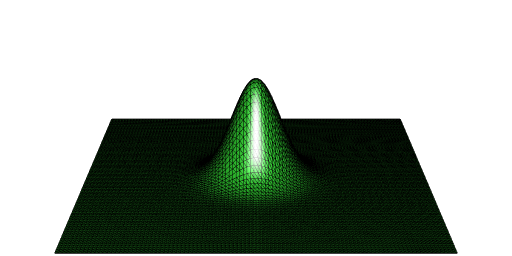
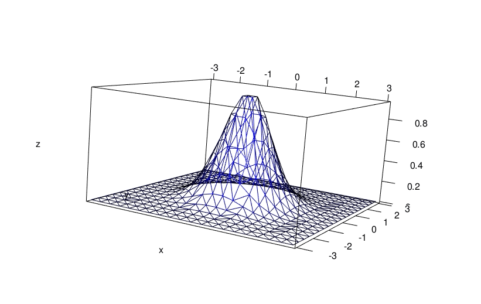

Volume under surface from points
The problem
Suppose you want to get the volume under a surface but you only have some points on this surface. For the illustration, I will take the surface defined by \(z = \exp\bigl(-(x^2 + y^2)\bigr)\) on the square \([-5, 5] \times [-5, 5]\). Then the volume we’re looking for is close to \(\pi\) (the integral on \([-\infty, +\infty] \times [-\infty, +\infty]\) is exactly \(\pi\)).
f <- function(x, y){
exp(-(x*x + y*y))
}Now let’s define a grid on \([-5, 5] \times [-5, 5]\) and the value of \(z\) for each point on this grid:
x <- seq(-5, 5, length.out = 100)
y <- seq(-5, 5, length.out = 100)
grd <- transform( # data (x_i, y_i, z_i)
expand.grid(x = x, y = y), z = f(x, y)
) Elevated Delaunay tessellation - using ‘deldir’
A solution consists in constructing a Delaunay tessellation of the surface and then to sum the volumes under the Delaunay triangles. The deldir package allows to construct such a Delaunay tessellation (which I call an elevated Delaunay tessellation).
library(deldir)
del <- deldir( # Delaunay
x = grd[["x"]], y = grd[["y"]], z = grd[["z"]],
rw = c(-5, 5, -5, 5), round = FALSE
)
trgls <- triang.list(del) # extracts all trianglesThe function below calculates the volume under a triangle:
volume_under_triangle <- function(trgl){
with(
trgl,
sum(z) *
(x[1L]*y[2L] - x[2L]*y[1L] + x[2L]*y[3L] -
x[3L]*y[2L] + x[3L]*y[1L] - x[1L]*y[3L]) / 6
)
}So here is our approximation of the volume:
volumes <- vapply(trgls, volume_under_triangle, numeric(1L))
sum(volumes)
## [1] 3.141592Using ‘RCGAL’
If you ran the above code, you noticed that the deldir function as well as the triang.list function are a bit slow. My package RCGAL (not on CRAN) can construct an elevated Delaunay tessellation, and it is faster.
library(RCGAL)
points <- as.matrix(grd)
del <- delaunay(points, elevation = TRUE)You can directly get the volume:
del[["volume"]]
## [1] 3.141593And you can easily plot the elevated Delaunay tessellation with the help of the rgl package:
mesh <- del[["mesh"]]
library(rgl)
open3d(windowRect = c(50, 50, 562, 306), zoom = 0.5)
aspect3d(1, 1, 3)
shade3d(mesh, color = "limegreen")
wire3d(mesh)
Interactive plot with ‘deldir’
The deldir also allows to get an interactive graphic from the elevated Delaunay tessellation. This requires the rgl package. I do it below with a less fine grid, otherwise the visualization is not nice (too dense):
x <- seq(-3, 3, length.out = 20)
y <- seq(-3, 3, length.out = 20)
grd <- transform(
expand.grid(x = x, y = y), z = f(x, y)
)
del <- deldir(
x = grd[["x"]], y = grd[["y"]], z = grd[["z"]],
rw = c(-3, 3, -3, 3), round = FALSE
) library(rgl)
persp3d(del, front = "lines", back = "lines", col = "blue")
aspect3d(2, 2, 1)